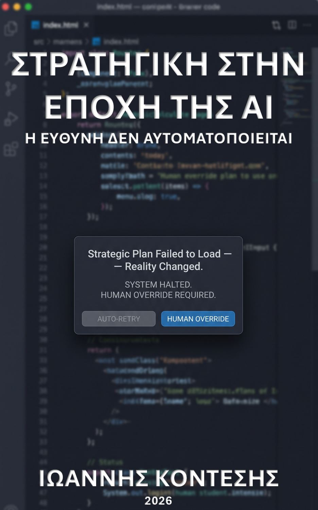

Η ευθύνη ΔΕΝ αυτοματοποιείται
129 σελίδες • Ελληνικά • Δωρεάν διανομή
Πρακτική εμπειρία από πραγματικές κρίσεις.
30+ χρόνια σε τραπεζικές ενοποιήσεις, Capital Controls, NPLs και ηγετικές θέσεις στη φιλοξενία.
Το βιβλίο δεν γράφτηκε από θεωρητικούς.
Εστίαση στην ευθύνη, όχι στην τεχνολογία.
Ενώ όλοι μιλάνε για ταχύτητα και παραγωγικότητα, εδώ τίθεται το δύσκολο ερώτημα:
Ποιος πληρώνει όταν ο αλγόριθμος κάνει λάθος;
Antifragility + Iterative Governance.
Συνδυάζει το πλαίσιο του Nassim Taleb με την κλασική στρατηγική ανάλυση του Robert M. Grant και το φέρνει στην πραγματικότητα των ρυθμιζόμενων κλάδων.
Δωρεάν και ανοιχτό.
Διατίθεται με άδεια CC BY-NC-ND 4.0. Σκοπός του δεν είναι να πουλήσει, αλλά να τεθεί σε δημόσια κρίση.
«Αυτό είναι και το ισχυρότερο στοιχείο του βιβλίου που κρατάτε στα χέρια σας: Δεν αντιμετωπίζει την Τεχνητή Νοημοσύνη ούτε σαν απειλή προς δαιμονοποίηση, ούτε σαν θαύμα για προσκύνημα. Την αντιμετωπίζει όπως πρέπει να αντιμετωπίζεται κάθε σοβαρή τεχνολογική αλλαγή: ως εργαλείο ισχύος, αλλά και ως μηχανισμό μετάθεσης ευθύνης, εφόσον χρησιμοποιηθεί χωρίς κρίση, χωρίς δομή και χωρίς ανθρώπινο διακύβευμα. »
Πέτρος Λάζος
Επιχειρηματίας / Αρθρογράφος capital.gr
Επαγγελματίας με περισσότερα από 30 χρόνια εμπειρίας σε ρυθμιζόμενα περιβάλλοντα. Ξεκίνησε στην Τράπεζα Εργασίας (1995) και συνέχισε στον Όμιλο Eurobank, όπου συντόνισε τέσσερις τραπεζικές ενοποιήσεις και διαχειρίστηκε κρίσεις σε πραγματικό χρόνο.
Στη συνέχεια συν-ίδρυσε περιφερειακή B2B επιχείρηση και κατείχε ηγετικές θέσεις σε ξενοδοχειακές μονάδες 5★/4★ (Από Λογιστής σε Γενικό Διευθυντή).
Σήμερα εστιάζει στη στρατηγική διοίκηση στην εποχή της AI, με έμφαση στην αντι-ευθραυστότητα και την ανθρώπινη λογοδοσία.